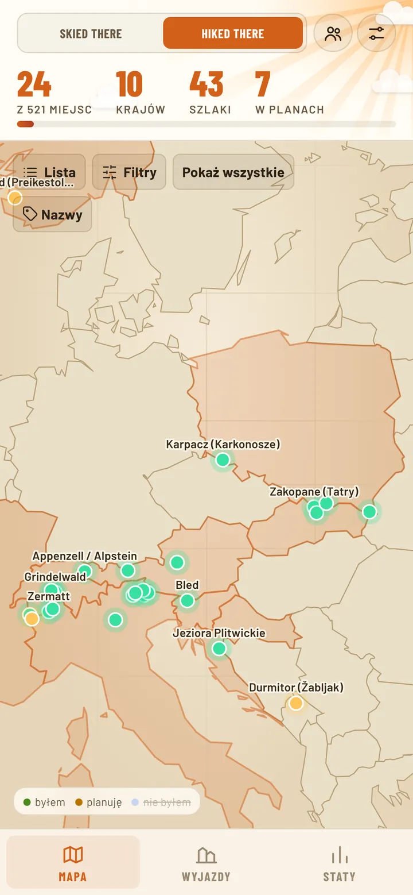
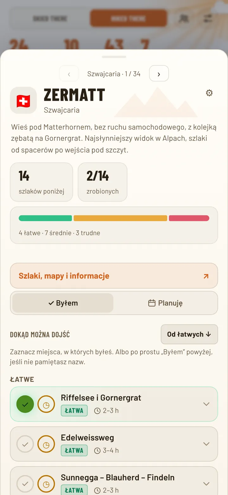
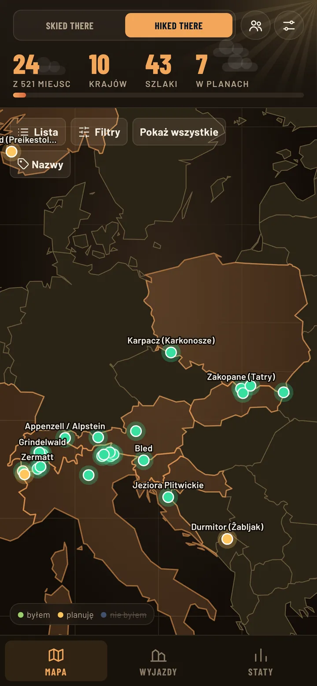
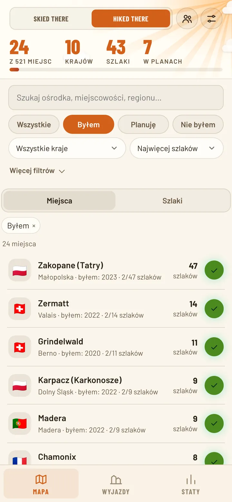
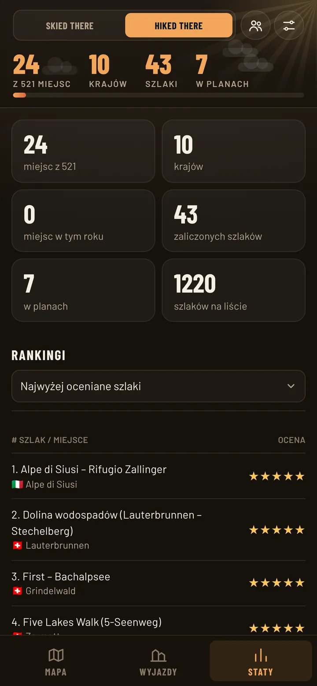

Gdzie byłeś w górach?
Odhacz ośrodki narciarskie i szlaki, które już masz za sobą. Zobacz je na jednej mapie, zaplanuj kolejny wyjazd ze znajomymi i wrzuć podsumowanie sezonu na TikToka.
Za darmo, działa w przeglądarce. Konto zakładasz dopiero, gdy chcesz mieć dane na telefonie i komputerze.




